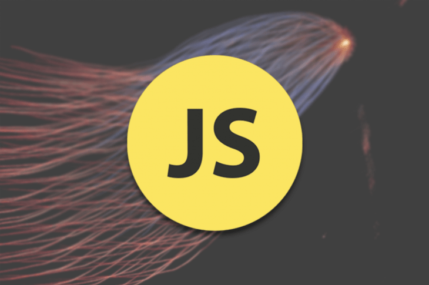

4 trabajos tecnológicos para personas que no codifican
En el primer artículo de esta serie, expliqué cómo la industria de la tecnología divide a las personas y los roles en categorías "técnicas" o "no técnicas" y los problemas asociados con esto. La industria de la tecnología hace que sea difícil para las personas interesadas en la tecnología, pero no en la codificación, descubrir dónde encajan y qué pueden hacer.

Cambios en el paquete web en 2021
webpack es un paquete de módulos de JavaScript que transforma elementos web como archivos HTML, CSS, JavaScript y SVG y los agrupa en un grupo de archivos más pequeño.
webpack también ayuda a fragmentar (dividir en unidades más pequeñas) y administrar las dependencias del código para garantizar que el código que se supone que debe cargar primero lo haga.
Lanzamiento de la nueva vista previa de Docker Desktop para Apple M1
Esta es solo una actualización rápida para hacerle saber que hemos lanzado otra vista previa de Docker Desktop para chips Apple M1, que puede descargar desde nuestra página de vista previa técnica de Docker Apple M1. El cambio más emocionante de esta versión es que Kubernetes ahora funciona.
Primero, un gran agradecimiento a todos los que probaron la vista previa anterior y nos dieron sus comentarios. Estamos muy emocionados de ver cuánto entusiasmo hay por esto, y también muy agradecidos por informar lo que aún no funciona y cuáles son sus principales prioridades para las soluciones rápidas. En esta publicación, queremos informarle sobre lo que hemos hecho y en lo que todavía estamos trabajando.